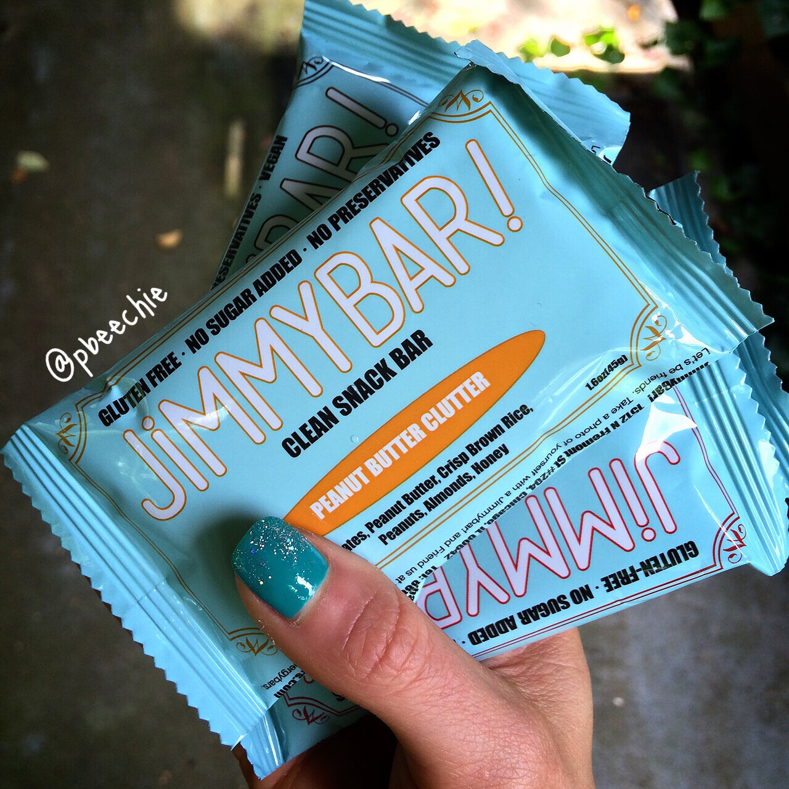
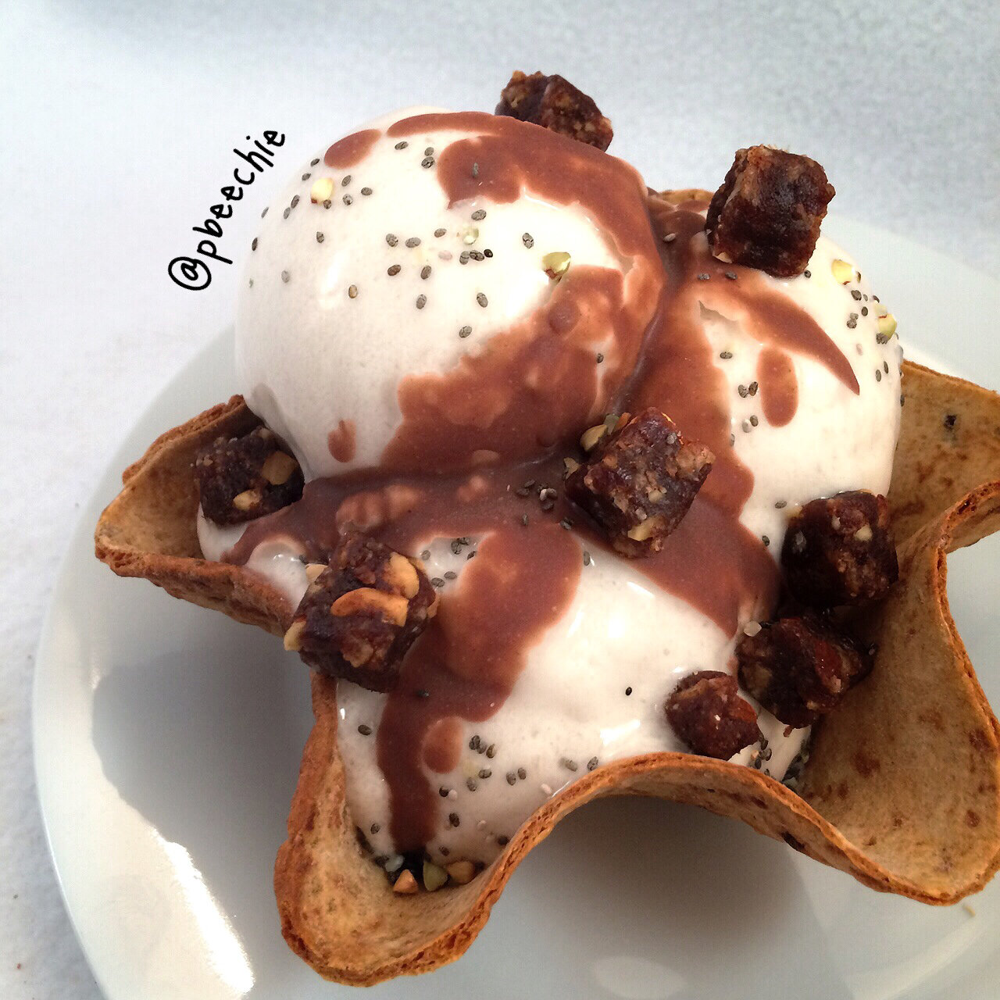

JimmyBar! Review

I had the pleasure of trying JimmyBars! recently and wanted to provide my review for those who were curious!By looking at the ingredients, right away I was impressed by them. JimmyBars! are made locally in Chicago; They are gluten-free, dairy-free, and don't use refined sugar! They use dates as the base because dates are sweet as well as high in fiber and vitamins. The ingredients used are whole foods like oats, nuts, and fruit.
Overall, each bar is soft and sweet. They remind me of larabars if you've had those before. The flavors are fairly similar to each other, yet they do provide enough of a difference in flavor to match your changing taste buds.No Bluffin' Banana Muffin:
This flavor didn't remind me of a banana muffin, yet it was delicious! Pretty standard.How 'Bout Dem Apples:
This was my favorite of them all! I love the crisp brown rice in it. Soft and pliable, sweet and crisp. Perfect flavor. Peanut Butter Clutter:
Definitely got the peanut butter taste from this! Peanut lovers heaven. You can even see chunks of peanuts in there. Super Hip Chocolate Chip:
My least favorite of the bars. The flavor was good but the texture was not. The chunks of nuts were too big and the bar didn't hold together at all. I was left with crumbs in my wrapper and it was hard to eat on-the-go. Regardless, it was definitely a filling snack.
If you want to try JimmyBars! you can use the discount code "PBEECHIE20" for 20% off any order!I chopped my peanut butter clutter JimmyBar! up and put it on my low cal ice cream as a delicious topping. Loved it.
